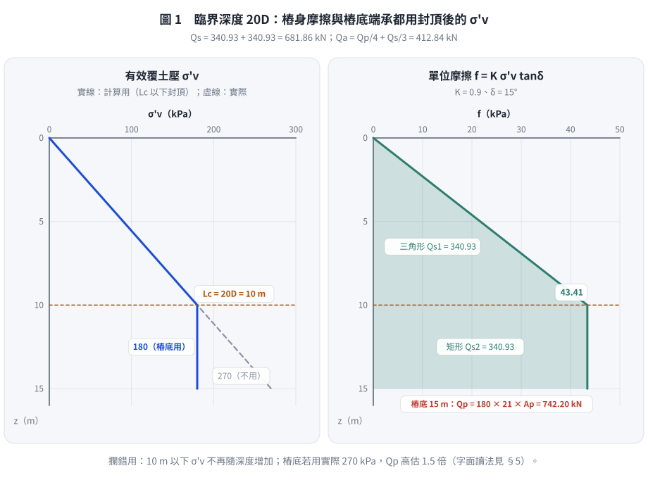

📄 題目正本：考卷原文・附圖・判讀清單（已確認）
SM-2007-3 題目正本
本檔只記錄考卷上寫了什麼、圖上畫了什麼，不含任何解法。解析見同資料夾
SM-2007-3.md。
判讀清單已確認（凍結）；本檔原則上不再修改（改動須回考卷原圖並記 log）。
| 項目 | 內容 |
|---|---|
| 考卷 | raw/exams/SM-2007_土壤力學與基礎設計.pdf 第 1 頁（全一頁），第三題 |
| 考年 | 民國 96 年（2007） |
| 配分 | 25 分（㈠8、㈡12、㈢5） |
| 附圖 | 無 |
| 判讀狀態 | 已確認（2026-11-15 關卡一：使用者授權依建議判讀確認；轉錄 2026-11-15；PyMuPDF 110 dpi 全頁目視，以 PDF 文字層核對逐字原文；盲讀後才比對既有解析） |
1. 考卷原文（逐字）
三、有一支圓形之預鑄混凝土樁，其長度為 15 m，直徑為 50 cm，被打入均勻之砂土層，已知砂土的單位重 $\gamma$ = 18 kN/m³，內摩擦角 $\phi$ = 30°，假設地下水位在樁底下方深處，試以我國建築物基礎構造設計規範所列之公式計算下列各值：
㈠若樁底支承力因素 $N_q$＝21，試計算此樁之極限樁底支承力 $Q_p$。（8 分）
㈡假設樁身摩擦阻力之臨界深度為 20 倍樁徑，側向土壓力係數表示為 $K = 1.8(1-\sin\phi)$，樁體表面與砂土之界面摩擦角表示為 $\delta$＝0.5$\phi$，試計算此樁之樁身摩擦阻力。（12 分）
㈢若採樁底支承力及樁身摩擦阻力之安全係數分別為 4.0 及 3.0，試求此樁之容許載重 $Q_a$。（5 分）
2. 考卷給的公式、附表與參數
- 樁：圓形預鑄混凝土樁，長 15 m、直徑 50 cm，打入。
- 砂土：$\gamma$ = 18 kN/m³、$\phi$ = 30°，均勻；地下水位在樁底下方深處（不影響）。
- ㈠：$N_q$ = 21。
- ㈡：樁身摩擦阻力臨界深度 = 20 倍樁徑；$K = 1.8(1-\sin\phi)$；$\delta = 0.5\phi$。
- ㈢：樁底 FS = 4.0、樁身 FS = 3.0。
- 題目指定「我國建築物基礎構造設計規範所列之公式」（現行版見
SM/SUBJECT.md§7）。 - 沒有給：樁底有效覆土壓是否也受臨界深度限制、樁底支承力上限值、樁身自重是否扣除。
- 卷首注意事項：㈠可以使用電子計算器。㈡不必抄題，作答時請將試題題號及答案依照順序寫在試卷上，於本試題上作答者，不予計分。※若條件不足，請自行作合理假設！
3. 附圖
本題無附圖。
4. 判讀清單
| # | 項目 | 判讀 | 圖上／題文依據 | 把握 |
|---|---|---|---|---|
| 1 | 樁底有效覆土壓 | 題目指定「我國建築物基礎構造設計規範所列之公式」→ 砂土打入樁樁底有效覆土壓同樣以臨界深度（20D = 10 m）處之值為上限，$\sigma'_v=18\times10$；照題文字面（臨界深度只限樁身、樁底用 15 m 深之 $\sigma'_v$）列為另一讀法。⚠ 待使用者複核：規範條文未能逐字核對 | 題文臨界深度只出現在㈡且明寫「樁身摩擦阻力之」 | 不確定（影響答案）；使用者授權依建議確認 |
| 2 | 臨界深度數值 | $20D = 20\times0.5 = 10$ m；10 m 以下摩擦用的 $\sigma'_v$ 維持 10 m 處之值 | 題文㈡ | 確定 |
| 3 | 地下水位 | 在樁底下方深處 → 全樁長用 $\gamma$ = 18（不扣浮力） | 題文 | 確定 |
| 4 | $K$ 與 $\delta$ | $K = 1.8(1-\sin30°) = 0.9$；$\delta = 15°$ | 題文 | 確定 |
| 5 | 樁頭位置 | 樁頭齊地表，摩擦沿全長 15 m | 題文「長度為 15 m」「被打入」 | 確定（解讀） |
| 6 | 樁底面積與周長 | 以直徑 0.5 m 實心圓斷面計（預鑄樁未說中空） | 題文「圓形之預鑄混凝土樁」 | 確定（解讀） |
| 7 | 規範版本 | 題目指定我國建築物基礎構造設計規範；依專案規定用現行版（112 年修正、113 年生效） | 題文；CLAUDE.md 規範版本 |
確定 |
| 8 | 所求 | ㈠極限樁底支承力 $Q_p$；㈡樁身摩擦阻力（極限）；㈢$Q_a$ = 分別除以 FS 4.0、3.0 後相加 | 題文 | 確定 |
| 9 | 考卷沒有給 | 樁底支承力上限、樁身自重處理、$\gamma_w$（本題不需要） | 全題 | 確定 |
轉錄：2026-11-15（SM-U2-2 題目正本推廣・批 1）
確認：2026-11-15 使用者授權依建議判讀確認（SM-U2-2 題目正本推廣・批 1，關卡一；使用者指示「要我確認的請依你建議」）
考題編號：SM-2007-3
主分類： SM-U2-2 深基礎之支承力與沉陷量
副分類： 無
分析法： 有效應力法
標籤： 樁基承載力 端點承載力 摩擦力 臨界深度 β法 容許承載力
1. 題目（考卷原文見題目正本）
考卷原文、公式／附表、附圖與判讀清單（已確認）見
SM-2007-3-problem.md。本節只列解題時最容易讀錯的地方與本解使用的記號；題意以題目正本為準。
常見誤讀
| 項目 | 正確判讀 | 常見誤讀 |
|---|---|---|
| 樁底有效覆土壓 | 依題目指定的規範公式，樁底 $\sigma'_v$ 也以臨界深度 10 m 處之值為上限（題目正本 #1，已確認；⚠ 待使用者複核） | 照題文字面只對樁身用臨界深度，樁底用 15 m 深的 $\sigma'_v$（$Q_p$ 高估 1.5 倍） |
| 臨界深度 | $20D=10$ m，10 m 以下摩擦用的 $\sigma'_v$ 維持定值（#2） | 用 15D 或全長線性增加 |
| 地下水位 | 在樁底下方深處，全長用 $\gamma=18$（#3） | 扣浮力 |
| 安全係數 | 樁底 4.0、樁身 3.0 分開除後相加（#8） | 合計後除單一 FS |
本解記號： $Q_p$ 極限樁底支承力；$Q_s$ 樁身摩擦阻力；$K$ 側向土壓力係數；$\delta$ 界面摩擦角；$Q_a$ 容許載重。
2. 考題核心精神與出題者意圖 (Core Concepts & Examiner's Intent)
- 單樁承載力公式：考驗考生對於砂土中單樁極限承載力的計算能力。
- 臨界深度（Critical Depth）概念：砂土中樁基礎的端點與側表面有效覆土應力會隨著深度增加而達到一極限值，超過臨界深度後，覆土應力不再增加。本題明確要求以 20 倍樁徑作為臨界深度。
- 安全係數的個別應用：測試端點支承力與側表面摩擦力分別應用不同安全係數的容許載重計算。
3. 解題戰略地圖與陷阱分析 (Strategic Roadmap & Trap Analysis)
- 確立幾何條件與參數：先計算樁底面積 $A_p$ 與樁周長 $p$。求出臨界深度 $L_c = 20D$。
- 極限樁底支承力 ($Q_p$)：計算達臨界深度處之有效覆土壓力 $q'$（即最大覆土壓力極限），然後代入 $q_p = q' N_q$ 求得點承載力，再乘上底面積 $A_p$。
- 陷阱：若未使用臨界深度限制，而直接以樁底實際深度 ($15 \text{ m}$) 計算覆土壓力，將會高估樁端承載力。我國規範對於砂土層一般要求使用臨界深度限制（本題題目亦已明示臨界深度之觀念）。
- 樁身摩擦阻力 ($Q_s$)：分兩段計算側表面摩擦力。
- 第一段（$0 \sim 10\text{ m}$）：有效覆土壓力隨深度呈三角形增加，摩擦應力由 0 增加至極限值。
- 第二段（$10 \sim 15\text{ m}$）：有效覆土壓力維持極限值不變，摩擦應力呈矩形分佈。
- 分別計算兩段面積並乘上樁周長 $p$ 即可求得總摩擦阻力。
- 容許載重 ($Q_a$)：按題目給定的各別安全係數相加。
3.5 變數層次分析 (Variable Hierarchy Analysis)
最終目標
求出預鑄混凝土樁之極限樁底支承力、樁身摩擦阻力，以及總容許載重
本題關鍵公式（依計算順序）
-
臨界深度 $L_c$ 計算：
$$ L_c = 20D $$ -
樁底端點有效覆土應力 $q'$ (受臨界深度限制)：
$$ q' = \gamma \times \boxed{L_c} $$ -
極限樁底支承力 $Q_p$：
$$ Q_p = q_p A_p = ( \boxed{q'} N_q ) \left( \frac{\pi}{4} D^2 \right) $$ -
樁身極限摩擦應力 $f_{s,\max}$：
$$ f_{s,\max} = K \boxed{q'} \tan\delta $$ -
樁身摩擦阻力 $Q_s$ (分段計算)：
$$ Q_s = Q_{s1} + Q_{s2} = p \left( \frac{1}{2} \boxed{f_{s,\max}} L_c \right) + p \left( \boxed{f_{s,\max}} (L - L_c) \right) $$ -
容許載重 $Q_a$：
$$ Q_a = \frac{\boxed{Q_p}}{FS_p} + \frac{\boxed{Q_s}}{FS_s} $$
L1：題目直接給定
| 符號 | 數值 | 說明 |
|---|---|---|
| $L$ | $15 \text{ m}$ | 樁長度 |
| $D$ | $0.5 \text{ m}$ | 樁直徑 |
| $\gamma$ | $18 \text{ kN/m}^3$ | 均勻砂土單位重 |
| $\phi$ | $30^\circ$ | 砂土內摩擦角 |
| $N_q$ | $21$ | 樁底支承力因素 |
| $K$ | $1.8(1 - \sin\phi)$ | 側向土壓力係數 |
| $\delta$ | $0.5\phi$ | 樁與砂土之界面摩擦角 |
| $FS_p$ | $4.0$ | 樁底支承力之安全係數 |
| $FS_s$ | $3.0$ | 樁身摩擦阻力之安全係數 |
L2：需知識點推導
臨界深度與極限樁底支承力
| 符號 | 公式／來源 | 卡關? |
|---|---|---|
| $L_c$ | $L_c = 20D$ | |
| $q'$ | 達臨界深度處之有效應力 $q' = \gamma \cdot L_c$ | |
| $A_p$ | $A_p = \pi D^2 / 4$ | |
| $Q_p$ | $Q_p = q' N_q A_p$ | |
樁身摩擦阻力
| 符號 | 公式／來源 | 卡關? |
|---|---|---|
| $K$ | 代入 $\phi$ 計算 $K$ | |
| $\delta$ | 代入 $\phi$ 計算 $\delta$ | |
| $p$ | 樁周長 $p = \pi D$ | |
| $f_{s,\max}$ | 達臨界深度後之最大側摩擦應力 $f_{s,\max} = K q' \tan\delta$ | |
| $Q_s$ | 上下兩層側摩擦力總和 $Q_{s1} + Q_{s2}$ | |
容許載重
| 符號 | 公式／來源 | 卡關? |
|---|---|---|
| $Q_a$ | $Q_a = Q_p / FS_p + Q_s / FS_s$ | |
L3：深層知識（不懂就卡住）
| 知識點 | 說明 | 卡關? |
|---|---|---|
| 臨界深度對於 $Q_p$ 的限制 | 規範規定於砂土中，樁端承載力有效覆土壓力計算深度亦受 $L_c$ 限制，不能無止盡隨樁長增加 | |
| 側摩擦力分佈圖形計算 | 側表面摩擦應力在 $L_c$ 以內呈三角形分佈（平均應力為一半），$L_c$ 之後呈均勻矩形分佈 |
4. 步驟化詳細計算過程 (Step-by-Step Detailed Calculation)
Step 1: 基礎參數與臨界深度計算
- 樁直徑 $D = 0.5 \text{ m}$
- 樁長 $L = 15 \text{ m}$
- 樁底面積 $A_p = \frac{\pi}{4} D^2 = \frac{\pi}{4} \times (0.5)^2 = 0.19635 \text{ m}^2$
- 樁周長 $p = \pi D = \pi \times 0.5 = 1.5708 \text{ m}$
- 臨界深度 $L_c = 20D = 20 \times 0.5 = 10 \text{ m}$
Step 2: (一) 計算極限樁底支承力 $Q_p$
策略註解：砂土中的樁點支承力計算，其有效覆土應力 $q'$ 在深度超過臨界深度 $L_c$ 後即不再增加。故以深度 $10 \text{ m}$ 計算其極限有效覆土應力。
-
樁底等效有效覆土應力 $q'$（限制於 $L_c = 10 \text{ m}$）：
$$ q' = \gamma \times L_c = 18 \times 10 = 180 \text{ kN/m}^2 $$ -
極限端點承載應力 $q_p$：
$$ q_p = q' \cdot N_q = 180 \times 21 = 3780 \text{ kN/m}^2 $$ -
極限樁底支承力 $Q_p$：
$$ Q_p = q_p \cdot A_p = 3780 \times 0.19635 = 742.20 \text{ kN} $$
$$ \boxed{Q_p = 742.20 \text{ kN}} $$
Step 3: (二) 計算樁身摩擦阻力 $Q_s$
策略註解：有效覆土應力在 $0 \sim 10 \text{ m}$ 呈三角形增加，在 $10 \sim 15 \text{ m}$ 保持定值。以此計算兩區段的側表面摩擦力並加總。
- 摩擦參數計算：
- $\phi = 30^\circ$
- $\sin\phi = \sin 30^\circ = 0.5$
- 側向土壓力係數 $K = 1.8(1 - \sin 30^\circ) = 1.8(1 - 0.5) = 0.9$
- 界面摩擦角 $\delta = 0.5\phi = 0.5 \times 30^\circ = 15^\circ$
-
達臨界深度 ($10 \text{ m}$) 之極限側摩擦應力 $f_{s,\max}$：
$$ f_{s,\max} = K \cdot q' \cdot \tan\delta = 0.9 \times 180 \times \tan 15^\circ $$
$$ f_{s,\max} = 162 \times 0.26795 = 43.408 \text{ kN/m}^2 $$ -
第一段摩擦阻力 $Q_{s1}$ (深度 $0 \sim 10 \text{ m}$)：
平均摩擦應力為 $\frac{f_{s,\max}}{2}$，作用長度為 $L_c = 10 \text{ m}$。
$$ Q_{s1} = p \times \left( \frac{1}{2} f_{s,\max} \times L_c \right) = 1.5708 \times \left( \frac{1}{2} \times 43.408 \times 10 \right) = 1.5708 \times 217.04 = 340.93 \text{ kN} $$ -
第二段摩擦阻力 $Q_{s2}$ (深度 $10 \sim 15 \text{ m}$)：
均勻摩擦應力為 $f_{s,\max}$，作用長度為 $L - L_c = 15 - 10 = 5 \text{ m}$。
$$ Q_{s2} = p \times \left( f_{s,\max} \times 5 \right) = 1.5708 \times (43.408 \times 5) = 1.5708 \times 217.04 = 340.93 \text{ kN} $$ -
總樁身摩擦阻力 $Q_s$：
$$ Q_s = Q_{s1} + Q_{s2} = 340.93 + 340.93 = 681.86 \text{ kN} $$
$$ \boxed{Q_s = 681.86 \text{ kN}} $$

圖 1 臨界深度 $20D=10$ m 以下 $\sigma'_v$ 封頂，樁身摩擦分成三角形與矩形兩段，樁底也用 180 kPa。攔下「10 m 以下仍線性增加」與「樁底用 15 m 實際應力」兩種錯誤（後者另見 §5 字面讀法）。
Step 4: (三) 計算容許載重 $Q_a$
策略註解：直接依據題目所給定的安全係數將極限支承力及摩擦力進行折減，加總後即得總容許載重。
- $FS_p = 4.0$，$FS_s = 3.0$
- 容許載重 $Q_a$：
$$ Q_a = \frac{Q_p}{FS_p} + \frac{Q_s}{FS_s} = \frac{742.20}{4.0} + \frac{681.86}{3.0} $$
$$ Q_a = 185.55 + 227.29 = 412.84 \text{ kN} $$
$$ \boxed{Q_a = 412.84 \text{ kN}} $$
5. 關鍵爭議點與進階探討 (Critical Issues & Advanced Discussion)
- 臨界深度對點支承力的適用性：在部分早期的深基礎學理中，點支承力的有效覆土應力是否受限於臨界深度仍有不同看法。但依我國建築物基礎構造設計規範，砂土中極限樁底端點的有效覆土壓力以不超過 20 倍樁徑相當之有效覆土壓力為原則，因此本題的計算流程必須將 $q'$ 限制在深度 10m 的數值，此為規範的一大重點陷阱。若將 15m 全長之有效覆土壓代入端點支承力公式計算，將造成端承力大幅高估並失分。
- 替代讀法與規範依據（2026-11-15 盲解比對補註）：題文只對樁身摩擦明寫臨界深度；本解依題目正本 #1（已確認）把樁底 $\sigma'_v$ 也限於 $L_c$ 處。若照字面以樁底 15 m 處 $\sigma'_v=270$ kPa 計，$Q_p$ = 1113.30 kN、$Q_a$ = 278.33 + 227.29 = 505.61 kN。上段所稱規範對樁底有效覆土壓的限制，本次未能逐字核對現行建築物基礎構造設計規範（內政部 112 年修正、113 年生效）原文，列為待使用者複核事項。另考卷未給樁體單位重，$Q_a$ 未扣樁自重。
修正日期：2026-11-15（§1 改為指向題目正本 SM-2007-3-problem.md；§5 補註樁底字面讀法替代值與規範待核（盲解比對後補充，答案未變）；§4 Step 3 後 補解題圖解 figs/SM-2007-3-fig-1-critical-depth.svg；非勘誤）